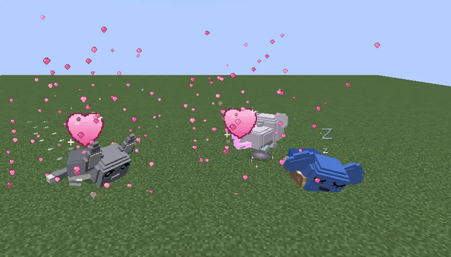

Baltoguh, Guhtwo guh and 626 guh: every story ends with a new friend that you (per player) can tame once.
Baltoguh, Guhtwo en 626-guh: elk verhaal eindigt met een nieuwe vriend die je (per speler) één keer mag temmen.
Baltoguh, Guhtwo and 626-guhBaltoguh, Guhtwo en 626-guh
The three story guhs. Each of them is yours once, at the end of its story.De drie verhaalguhs. Elk ervan wordt een keer van jou, aan het eind van zijn verhaal.

Home with youMee naar huis
Just tamed: a shower of hearts. They are a bit bigger than a normal guh.Net getemd: een regen van hartjes. Ze zijn een beetje groter dan een gewone guh.
The story guhs: once per playerDe verhaalguhs: een keer per speler
The Baltoguh, the Guhtwo and the 626-guh are new guh variants, but you can't find them in the wild. How it works:
De Baltoguh, de Guhtwo en de 626-guh zijn nieuwe guhvarianten, maar je vindt ze niet in het wild. Zo werkt het:
- In its building lives a story copy: it's part of the story, stays at its spot (it walks back if it wanders off), can't be hurt, and kaas knabbels don't tame it.In zijn gebouw woont een verhaalkopie: die hoort bij het verhaal, blijft op zijn plekje (hij loopt terug als hij wegdwaalt), kan niet gewond raken, en kaasknabbels temmen hem niet.
- When you finish its story, the copy asks if it may come along. Then your own story guh appears next to you, already tamed, with a shower of hearts. It is a bit bigger than a normal guh (1.25×).Als je zijn verhaal af hebt, vraagt de kopie of hij mee mag. Dan verschijnt jouw eigen verhaalguh naast je, al getemd, met een regen van hartjes. Hij is een beetje groter dan een gewone guh (1,25×).
- Once per player: you get one of each. Every other player on the server can play the story too and gets their own. The copy always stays in the building for the next player.Een keer per speler: je krijgt er van elk een. Elke andere speler op de server kan het verhaal ook spelen en krijgt zijn eigen. De kopie blijft altijd in het gebouw voor de volgende speler.
- After that it's a normal guh of yours: hearts, favorietjes, a dagboekje, a huisje, klusjes, clothes, riding, picking up. Each one has its own special button in the guh menu (next to the Guhkamer button): Snuffel!, Telekinese or Ukelele.Daarna is het een gewone guh van jou: hartjes, favorietjes, een dagboekje, een huisje, klusjes, kleertjes, rijden, oppakken. Elk heeft een eigen speciale knop in het guhmenu (naast de Guhkamer-knop): Snuffel!, Telekinese of Ukelele.
- Babies of story guhs are ordinary guhs, and there are no plushies of them in the grijpmachine.Baby's van verhaalguhs zijn gewone guhs, en er zijn geen knuffels van ze in de grijpmachine.